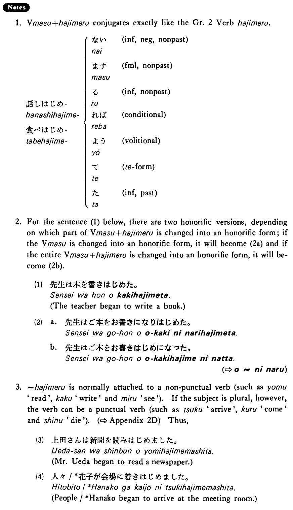

始める・はじめる (B. 131)
- (ks).
- 明日からレポートを書き始める・始めます。
- I'll begin to write my paper tomorrow.
- (a).
- 私は八月から源氏物語を読み始めました。
- I began to read The Tale of Genji in August.
- (b).
- 日本の経済は１９６４年の東京オリンピックのころから強くなり始めた。
- The Japanese economy began to strengthen about the time of the 1964 Tokyo Olympics.
- (c).
- A:いつから切手を集め始めたんですか。 B:子供の時から集め始めました。
- A: When did you start to collect stamps? B: I started to collect them (literally: since) I was a child.
